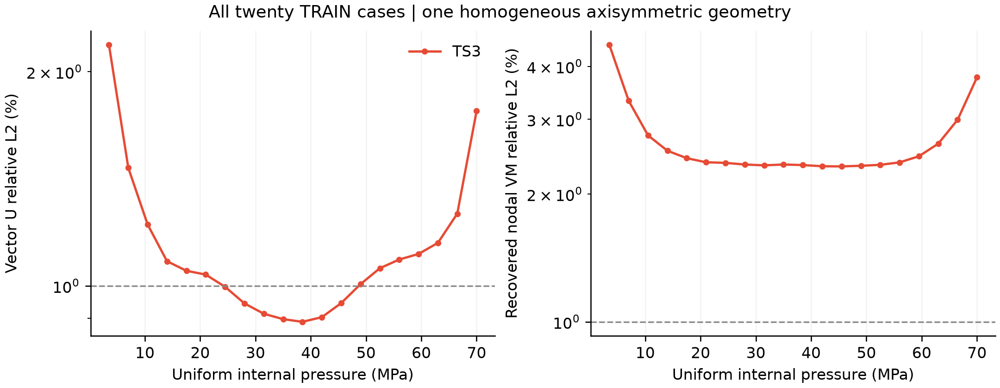
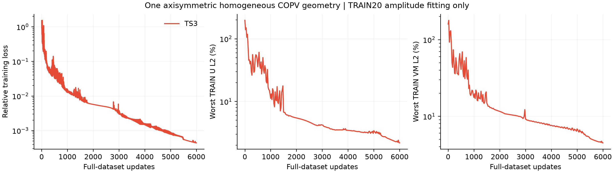
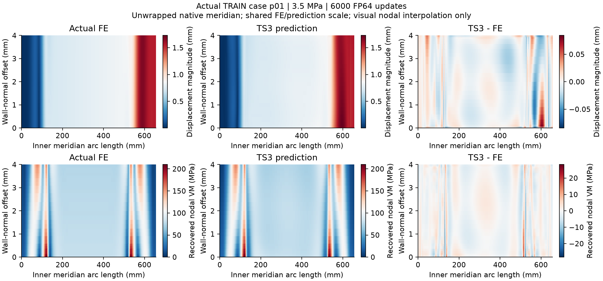
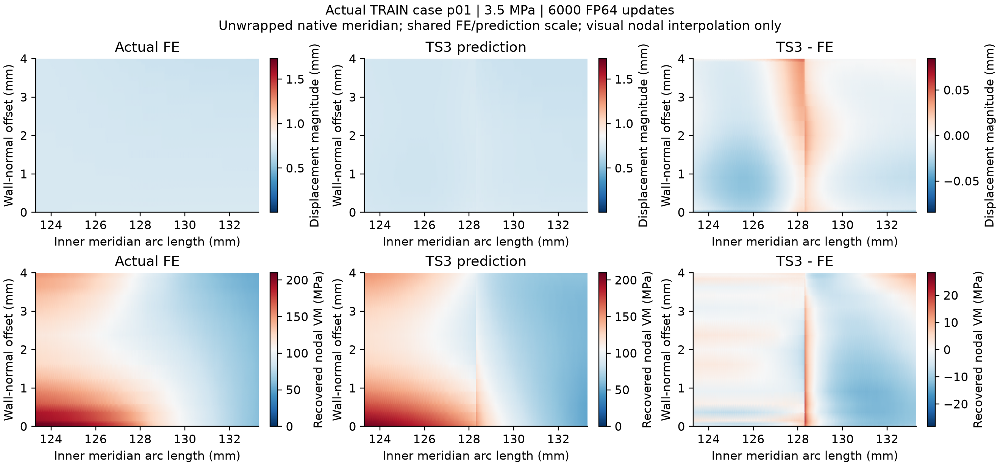

All 20 native-node predictions independently checked on CPU. Worst vector U relative L2: 2.182068%; worst recovered VM relative L2: 4.495335%. All-case 1% target passed: False. Negative-VM cases: 1.
Actual terminal status: budget_exhausted_report_actual_metrics_not_automatic_overfit_pass. A completed budget does not establish an overfit pass. Negative-VM predictions remain unchanged; their case minima are recorded in the CSV and verification JSON. One homogeneous equivalent-wall geometry, pressure-amplitude TRAIN fitting only; no generalization or rated-pressure claim.

All-case CSV · Figure PDF · Independent verification

Worst case p01, 3.5 MPa. The native meridian is displayed using physical arc length and wall-normal distance. Display interpolation leaves labels and metrics unchanged. Predictions are not clipped.

